正文
3.1 从感知机到神经网络
3.1.1 神经网络的例子
我们把最左边的一列称为输入层 ，最右边的一列称为输出层 ，中间的一列称为中间层 。中间层有时也称为隐藏层。“隐藏”一词的意思是，隐藏层的神经元（和输入层、输出层不同）肉眼看不见。另外，本书中把输入层到输出层依次称为第 0 层、第 1 层、第 2 层（层号之所以从 0 开始，是为了方便后面基于 Python 进行实现）。
第 0 层对应输入层，第 1 层对应中间层，第 2 层对应输出层。
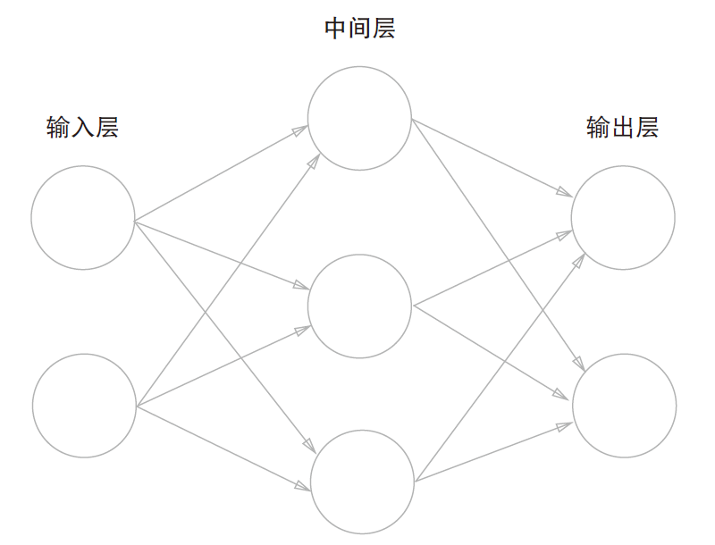
上图中的网络一共由 3 层神经元构成，但实质上只有 2 层神经元有权重，因此将其称为“2 层网络”。请注意，有的书也会根据构成网络的层数，把上图的网络称为“3 层网络”。本书将根据实质上拥有权重的层数（输入层、隐藏层、输出层的总数减去 1 后的数量）来表示网络的名称。
3.1.2 复习感知机
将式子
y = { 0 ( b + w 1 x 1 + w 2 x 2 ≤ 0 ) 1 ( b + w 1 x 1 + w 2 x 2 > 0 ) y=\left\{\begin{matrix}0\quad (b+w_1x_1+w_2x_2\le 0)\\1\quad(b+w_1x_1+w_2x_2>0)\end{matrix}\right.
y = { 0 ( b + w 1 x 1 + w 2 x 2 ≤ 0 ) 1 ( b + w 1 x 1 + w 2 x 2 > 0 )
改写为更加简洁的式子，引入新函数 h ( x ) h(x) h ( x ) y = h ( b + w 1 x 1 + w 2 x 2 ) y=h(b+w_1x_1+w_2x_2) y = h ( b + w 1 x 1 + w 2 x 2 )
h ( x ) = { 0 ( x ≤ 0 ) 1 ( x > 0 ) h(x)=\left\{\begin{matrix}0\quad(x\le 0)\\1\quad (x>0)\end{matrix}\right.
h ( x ) = { 0 ( x ≤ 0 ) 1 ( x > 0 )
输入信号的总和会被函数 h ( x ) h(x) h ( x ) y y y h ( x ) h(x) h ( x )
3.1.3 激活函数登场
刚才登场的 h ( x ) h(x) h ( x ) 激活函数（activation function） 。
a=b+w_1x_1+w_2x_2\\y=h(a)
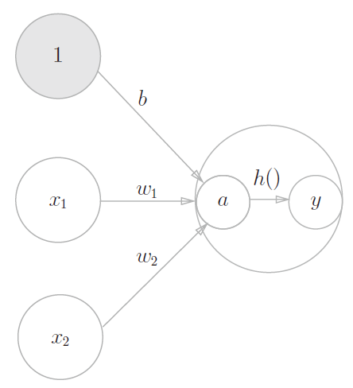
上图表示神经元的○中明确显示了激活函数的计算过程，即信号的加权总和为节点 a a a a a a h ( ) h() h ( ) y y y a a a y y y
3.2 激活函数
在激活函数的众多候选函数中，感知机使用了阶跃函数 。那么，如果感知机使用其他函数作为激活函数的话会怎么样呢？实际上，如果将激活函数从阶跃函数换成其他函数，就可以进入神经网络 的世界了。
3.2.1sigmoid 函数
神经网络中经常使用的一个激活函数：sigmoid 函数（sigmoid function）
h ( x ) = 1 1 + exp ( − x ) h(x)=\frac{1}{1+\exp(-x)}
h ( x ) = 1 + exp ( − x ) 1
3.2.2 阶跃函数的实现
1 2 3 4 5 6 def step_function (x ):""" 阶跃函数（允许参数取 Numpy 数组的形式） """ 0 return y.astype(int )
对 NumPy 数组进行不等号运算后，数组的各个元素都会进行不等号运算，生成一个布尔型数组。这里，数组 x 中大于 0 的元素被转换为 True，小于等
1 2 3 4 5 import numpy as np1.0 , 1.0 , 2.0 ])0
array([False, True, True])
array([0, 1, 1])
3.2.3 阶跃函数的图形
1 2 3 4 5 6 7 8 9 10 11 12 import numpy as npimport matplotlib.pyplot as pltdef strp_function (x ):return np.array(x > 0 , dtype=int )5.0 , 5.0 , 0.1 )0.1 , 1.1 )
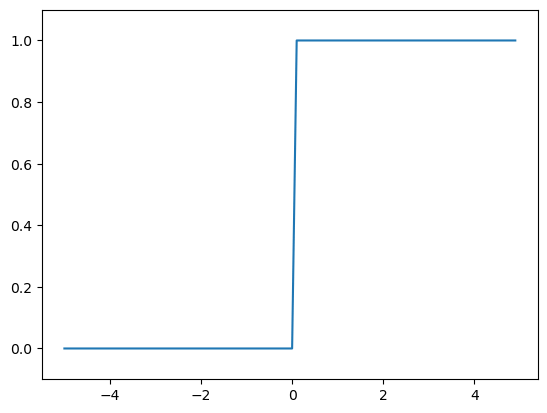
3.2.4sigmoid 函数的实现
1 2 def sigmoid (x ):return 1 / (1 + np.exp(-x))
1 2 x = np.array([-1.0 , 1.0 , 2.0 ])
array([0.26894142, 0.73105858, 0.88079708])
1 2 3 4 5 x = np.arange(-5.0 , 5.0 , 0.1 )0.1 , 1.1 )
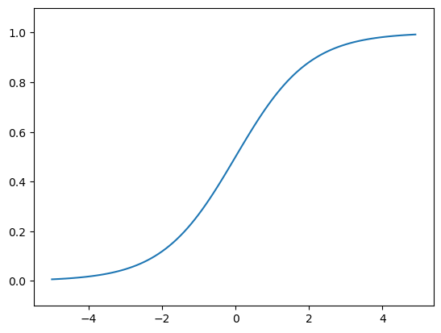
3.2.6 非线性函数
3.2.7 ReLU 函数
在神经网络发展的历史上，sigmoid 函数很早就开始被使用了，而最近则主要使用**ReLU（Rectified Linear Unit）**函数。
h ( x ) = { x ( x > 0 ) 0 ( x ≤ 0 ) h(x)=\left\{\begin{matrix}x\quad(x>0)\\0\quad(x\le0)\end{matrix}\right.
h ( x ) = { x ( x > 0 ) 0 ( x ≤ 0 )
1 2 def relu (x ):return np.maximum(0 , x)
1 2 3 4 5 x = np.arange(-5.0 , 5.0 , 0.1 )0.1 , 5 )
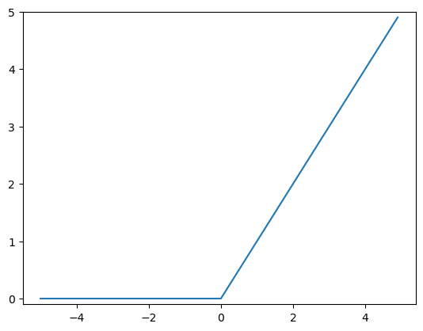
3.3 多维数组的运算
3.3.3 神经网络的内积
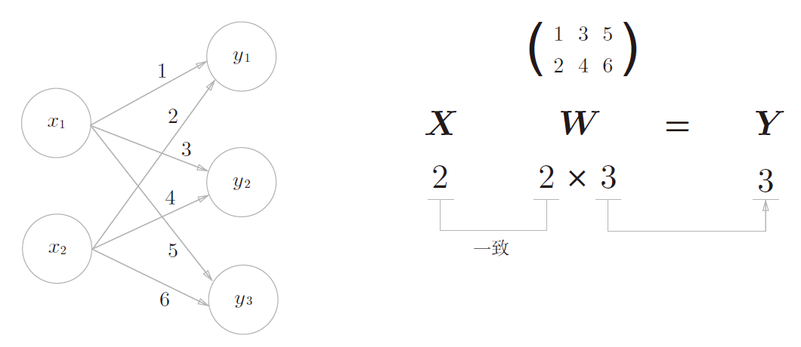
上图中的简单神经网络为对象。这个神经网络省略了偏置和激活函数，只有权重。
W = ( 1 3 5 2 4 6 ) \mathbf{W} = \begin{pmatrix} 1 & 3 & 5\\ 2 & 4 & 6 \end{pmatrix}
W = ( 1 2 3 4 5 6 )
实现该神经网络时，要注意 X \mathbf{X} X W \mathbf{W} W Y \mathbf{Y} Y X \mathbf{X} X W \mathbf{W} W
1 2 3 4 X = np.array([1 , 2 ])1 , 3 , 5 ], [2 , 4 , 6 ]])
array([ 5, 11, 17])
使用np.dot（多维数组的点积），可以一次性计算出 Y \mathbf{Y} Y Y \mathbf{Y} Y np.dot，就必须单独计算 Y \mathbf{Y} Y for语句），非常麻烦。因此，通过矩阵的乘积一次性完成计算的技巧，在实现的层面上可以说是非常重要的。
3.4 3 层神经网络的实现
3.4.1 符号确认
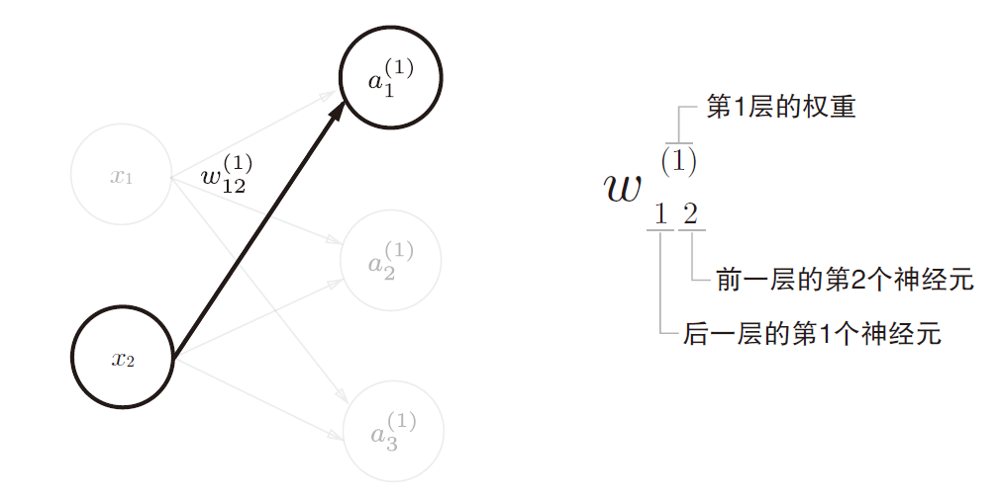
3.4.2 各层间信号传递的实现
a 1 ( 1 ) = w 1 1 ( 1 ) x 1 + w 1 2 ( 1 ) x 2 + b 1 ( 1 ) a^{(1)}_1=w^{(1)}_{11}x_1+w^{(1)}_{12}x_2+b^{(1)}_1
a 1 ( 1 ) = w 1 1 ( 1 ) x 1 + w 1 2 ( 1 ) x 2 + b 1 ( 1 )
如果使用矩阵的乘法运算，则可以将第 1 层的加权和表示成下面的式：
A ( 1 ) = X W ( 1 ) + B ( 1 ) \mathbf{A}^{(1)}=\mathbf{XW}^{(1)}+\mathbf{B}^{(1)}
A ( 1 ) = X W ( 1 ) + B ( 1 )
其中，A ( 1 ) \mathbf{A}^{(1)} A ( 1 ) X \mathbf{X} X B ( 1 ) \mathbf{B}^{(1)} B ( 1 ) W ( 1 ) \mathbf{W}^{(1)} W ( 1 )
A ( 1 ) = ( a 1 ( 1 ) a 2 ( 1 ) a 3 ( 1 ) ) \mathbf A^{(1)}=\begin{pmatrix} a^{(1)}_1 & a^{(1)}_2 & a^{(1)}_3 \end{pmatrix} A ( 1 ) = ( a 1 ( 1 ) a 2 ( 1 ) a 3 ( 1 ) ) X = ( x 1 x 2 ) \mathbf{X} = \begin{pmatrix} x_1 & x_2 \end{pmatrix} X = ( x 1 x 2 ) B ( 1 ) = ( b 1 ( 1 ) b 2 ( 1 ) b 3 ( 1 ) ) \mathbf{B}^{(1)} = \begin{pmatrix} b^{(1)}_1 & b^{(1)}_2 & b^{(1)}_3 \end{pmatrix} B ( 1 ) = ( b 1 ( 1 ) b 2 ( 1 ) b 3 ( 1 ) )
W ( 1 ) = ( w 1 1 ( 1 ) w 2 1 ( 1 ) w 3 1 ( 1 ) w 1 2 ( 1 ) w 2 2 ( 1 ) w 3 2 ( 1 ) ) \mathbf{W}^{(1)} = \begin{pmatrix} w^{(1)}_{11} & w^{(1)}_{21} & w^{(1)}_{31} \\ w^{(1)}_{12} & w^{(1)}_{22} & w^{(1)}_{32}\end{pmatrix} W ( 1 ) = ( w 1 1 ( 1 ) w 1 2 ( 1 ) w 2 1 ( 1 ) w 2 2 ( 1 ) w 3 1 ( 1 ) w 3 2 ( 1 ) )
输入层到第 1 层的信号传递：
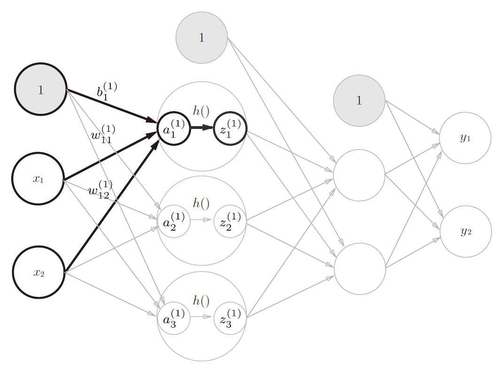
1 2 3 4 5 6 7 8 9 import numpy as np1.0 , 0.5 ])0.1 , 0.3 , 0.5 ], [0.2 , 0.4 , 0.6 ]])0.1 , 0.2 , 0.3 ]])print (W1.shape)print (X.shape)print (B1.shape)
(2, 3)
(2,)
(1, 3)
1 2 A1 = np.dot(X, W1) + B1
array([[0.3, 0.7, 1.1]])
array([[0.57444252, 0.66818777, 0.75026011]])
实现第 1 层到第 2 层的信号传递：
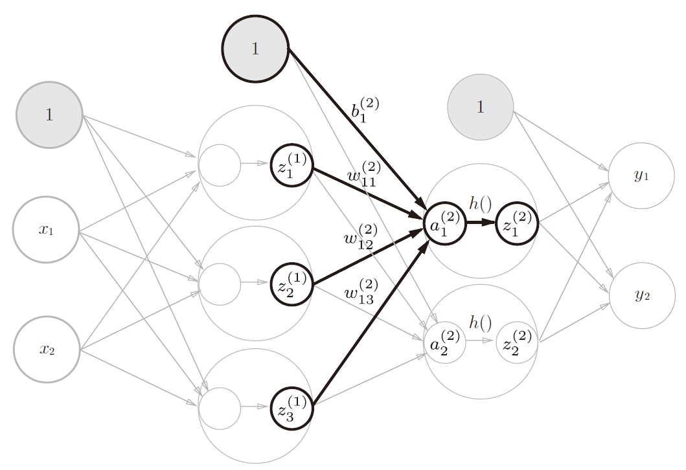
1 2 3 4 5 6 W2 = np.array([[0.1 , 0.4 ], [0.2 , 0.5 ], [0.3 , 0.6 ]])0.1 , 0.2 ])print (Z1.shape)print (W2.shape)print (B2.shape)
(1, 3)
(3, 2)
(2,)
1 2 A2 = np.dot(Z1, W2) + B2
实现第 2 层到输出层的信号传递：
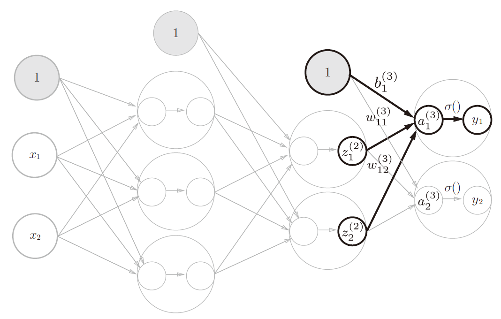
1 2 3 4 5 6 7 8 9 10 11 12 13 14 def identity_function (x ):""" 这里我们定义了 identity_function()函数（也称为“恒等函数”），并将 其作为输出层的激活函数。恒等函数会将输入按原样输出，因此，这个例子 中没有必要特意定义 identity_function()。这里这样实现只是为了和之前的 流程保持统一。 """ return x0.1 , 0.3 ], [0.2 , 0.4 ]])0.1 , 0.2 ])
输出层的激活函数用 σ ( ) \sigma() σ ( ) h ( ) h() h ( )
输出层所用的激活函数，要根据求解问题的性质决定。
3.4.3 代码实现小结
1 2 3 4 5 6 7 8 9 10 11 12 13 14 15 16 17 18 19 20 21 22 23 24 25 26 27 28 29 30 31 32 33 34 def init_network ():""" 按照神经网络的实现惯例，只把权重记为大写字母 W1，其他的（偏置或中间结果等）都用小写字母表示。 """ 'W1' ] = np.array([[0.1 , 0.3 , 0.5 ], [0.2 , 0.4 , 0.6 ]])'b1' ] = np.array([0.1 , 0.2 , 0.3 ])'W2' ] = np.array([[0.1 , 0.4 ], [0.2 , 0.5 ], [0.3 , 0.6 ]])'b2' ] = np.array([0.1 , 0.2 ])'W3' ] = np.array([[0.1 , 0.3 ], [0.2 , 0.4 ]])'b3' ] = np.array([0.1 , 0.2 ])return networkdef forward (network, x ):""" 表示的是从输入到输出方向的传递处理 """ 'W1' ], network['W2' ], network['W3' ]'b1' ], network['b2' ], network['b3' ]return y1.0 , 0.5 ])print (y)
[0.31682708 0.69627909]
3.5 输出层的设计
3.5.1 恒等函数和 softmax 函数
y k = exp ( x k ) ∑ i = 1 n exp ( a i ) y_k=\frac{\exp(x_k)}{\sum^n_{i=1}\exp(a_i)}
y k = ∑ i = 1 n exp ( a i ) exp ( x k )
1 2 3 4 5 6 def softmax (a ):sum (exp_a)return y
3.5.2 实现 softmax 函数时的注意事项
由于要进行指数函数的运算，可能会导致溢出。
进行改进：
\begin{eqnarray}
y_k &= \frac{\exp(a_k)}{\sum^n_{i=1}\exp(a_i)} &= \frac{C\exp(a_k)}{C\sum^n_{i=1}\exp(a_i)} \\
& &=\frac{\exp(a_k+\log C)}{\sum^n_{i=1}\exp(a_i+\log C)} \\
& &=\frac{\exp(a_k+C')}{\sum^n_{i=1}\exp(a_i+C')}
\end{eqnarray}
其中 C C C log C = C ′ \log C=C' log C = C ′ C ′ C' C ′
1 2 a = np.array([1010 , 1000 , 990 ])sum (np.exp(a))
C:\Users\gzjzx\AppData\Local\Temp\ipykernel_15664\832863605.py:2: RuntimeWarning: overflow encountered in exp
np.exp(a) / np.sum(np.exp(a))
C:\Users\gzjzx\AppData\Local\Temp\ipykernel_15664\832863605.py:2: RuntimeWarning: invalid value encountered in true_divide
np.exp(a) / np.sum(np.exp(a))
array([nan, nan, nan])
array([ 0, -10, -20])
1 np.exp(a-c) / np.sum (np.exp(a-c))
array([9.99954600e-01, 4.53978686e-05, 2.06106005e-09])
综上，我们可以像下面这样实现 softmax 函数。
1 2 3 4 5 6 def softmax (a ):max (a)sum (exp_a)return y
3.5.3softmax 函数的特征
1 2 3 a = np.array([0.3 , 2.9 , 4.0 ])
array([0.01821127, 0.24519181, 0.73659691])
1.0
softmax 函数的输出是 0.0 到 1.0 之间的实数
softmax 函数的输出值的总和是 1
3.5.4 输出层的神经元数量
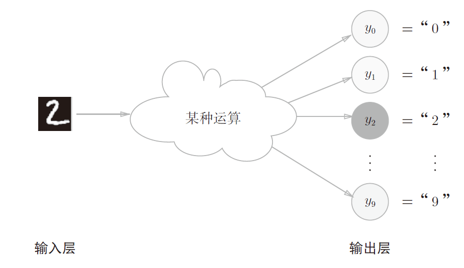
输出层的神经元数量需要根据待解决的问题来决定。对于分类问题，输出层的神经元数量一般设定为类别的数量。
3.6 手写数字识别
假设学习已经全部结束，我们使用学习到的参数，先实现神经网络的“推理处理”。这个推理处理也称为神经网络的前向传播（forward propagation） 。
3.6.1 MNIST 数据集
MNIST 的图像数据是 28 像素× 28 像素的灰度图像（1 通道），各个像素的取值在 0 到 255 之间。每个图像数据都相应地标有“7”“2”“1”等标签。
本书提供了便利的 Python 脚本 mnist.py ，该脚本支持从下载 MNIST 数据mnist.py 在 dataset 目录下）。使用mnist.py 时，当前目录必须是 ch01、ch02、ch03、…、ch08 目录中的一个。使mnist.py 中的 load_mnist()函数，就可以按下述方式轻松读入 MNIST 数据。
1 2 3 4 5 6 7 import sys, osfrom dataset.mnist import load_mnistTrue , normalize=False )
Downloading train-images-idx3-ubyte.gz ...
Done
Downloading train-labels-idx1-ubyte.gz ...
Done
Downloading t10k-images-idx3-ubyte.gz ...
Done
Downloading t10k-labels-idx1-ubyte.gz ...
Done
Converting train-images-idx3-ubyte.gz to NumPy Array ...
Done
Converting train-labels-idx1-ubyte.gz to NumPy Array ...
Done
Converting t10k-images-idx3-ubyte.gz to NumPy Array ...
Done
Converting t10k-labels-idx1-ubyte.gz to NumPy Array ...
Done
Creating pickle file ...
Done!
1 2 3 4 5 print (x_train.shape) print (t_train.shape) print (x_test.shape) print (t_test.shape)
(60000, 784)
(60000,)
(10000, 784)
(10000,)
试着显示 MNIST 图像，同时也确认一下数据
1 2 3 4 5 6 7 8 9 10 11 12 13 14 15 16 17 18 19 20 21 import sys, osimport numpy as npfrom dataset.mnist import load_mnistfrom PIL import Imageimport matplotlib.pyplot as pltdef img_show (img ):True , normalize=False )0 ]0 ]print (label) print (img.shape) 28 , 28 ) print (img.shape) 'gray' )
5
(784,)
(28, 28)
<matplotlib.image.AxesImage at 0x1f5a63afca0>
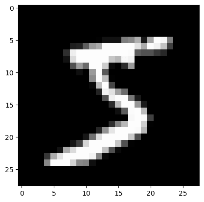
3.6.2 神经网络的推理处理
对这个 MNIST 数据集实现神经网络的推理处理。
输入层的 784 这个数字来源于图像大小的 28 × 28 = 784
输出层的 10 这个数字来源于 10 类别分类（数字 0 到 9，共 10 类别）
这个神经网络有 2 个隐藏层，第 1 个隐藏层有 50 个神经元，第 2 个隐藏层有 100 个神经元。这个 50 和 100 可以设置为任何值。
1 2 3 4 5 6 7 def get_data ():""" 获取数据 """ True , flatten=True , one_hot_label=False )return x_test, t_test
将 normalize 设置成True后，函数内部会进行转换，将图像的各个像素值除以 255，使得数据的值在 0.0～1.0 的范围内。像这样把数据限定到某个范围内的处理称为正规化（normalization） 。此外，对神经网络的输入数据进行某种既定的转换称为预处理（pre-processing） 。
1 2 3 4 5 6 7 8 def init_network ():""" 读入保存在 pickle 文件 sample_weight.pkl 中的学习到的权重参数 这个文件中以字典变量的形式保存了权重和偏置参数 """ with open ("sample_weight.pkl" , 'rb' ) as f:return network
1 2 3 4 5 6 7 8 9 10 11 12 13 14 def predict (network, x ):""" 前向传播 """ 'W1' ], network['W2' ], network['W3' ]'b1' ], network['b2' ], network['b3' ]return y
1 2 3 4 5 6 7 8 9 10 11 12 13 14 15 16 17 import pickle0 for i in range (len (x)):""" 用 for 语句逐一取出保存在 x 中的图像数据，用 predict()函数进行分类。 predict()函数以 NumPy 数组的形式输出各个标签对应的概率。 """ if p == t[i]:1 print ("Accuracy: " + str (float (accuracy_cnt) / len (x)))
Accuracy:0.9352
3.6.3 批处理
输出刚才的神经网络的各层的权重的形状。
1 2 3 x, _ = get_data()'W1' ], network['W2' ], network['W3' ]
(10000, 784)
(784,)
(784, 50)
(50, 100)
(100, 10)
从整体的处理流程来看，图 3-26 中，输入一个由 784 个元素（原本是一个 28 × 28 的二维数组）构成的一维数组后，输出一个有 10 个元素的一维数组。这是只输入一张图像数据时的处理流程。
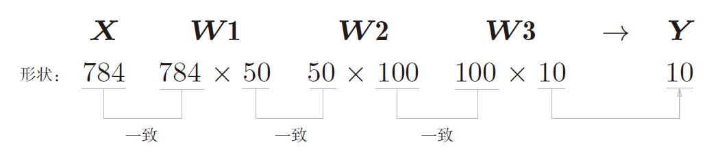
现在我们来考虑打包输入多张图像的情形。比如，我们想用predict()x \mathbf{x} x
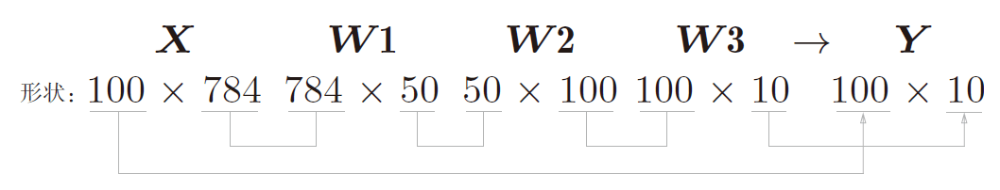
这种打包式的输入数据称为批（batch） 。批有“捆”的意思，图像就如同纸币一样扎成一捆。
1 2 3 4 5 6 7 8 9 10 11 12 13 14 15 16 17 18 19 20 21 x, t = get_data()100 0 for i in range (0 , len (x), batch_size):""" 在 range()函数生成的列表的基础上，通过 x[i:i+batch_size]从输入数据中抽出批数据。 x[i:i+batch_n]会取出从第 i 个到第 i+batch_n 个之间的数据。 """ """ 参数 axis=1。这指定了在 100 × 10 的数组中，沿着第 1 维方向（以第 1 维为轴） 找到值最大的元素的索引（第 0 维对应第 1 个维度）。 """ 1 ) sum (p == t[i:i+batch_size])print ("Accuracy:" + str (float (accuracy_cnt) / len (x)))
Accuracy:0.9352
3.7 小结
神经网络中的激活函数使用平滑变化的 sigmoid 函数或 ReLU 函数。
通过巧妙地使用 NumPy 多维数组，可以高效地实现神经网络。
机器学习的问题大体上可以分为回归问题和分类问题。
关于输出层的激活函数，回归问题中一般用恒等函数，分类问题中一般用 softmax 函数。
分类问题中，输出层的神经元的数量设置为要分类的类别数。
输入数据的集合称为批。通过以批为单位进行推理处理，能够实现高速的运算。